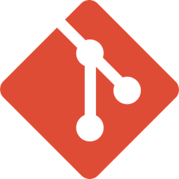
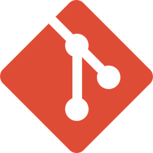

Robin Gruenke
Freelancer & Web Applications Specialist
View My GitHub Profile | Get a quote
My Open Source Projects
mosayk
A utility library containing iterator-generator patterns and promisified stuff
batch-decrypt-ether-accounts
Tool which batch decrypts ethereum private keys in parallel, plus some methods to fetch the ether and token balances [WIP]
my-simple-react-app-example
A very simple reactjs boilerplate to create web applications
itunes-backup-recovery-tool
This tool recovers (via magic number bytes) all media like pictures, videos and recorded audio from an unencrypted iTunes backup. Donate if you want to support development:(Ethereum) 0x686123523ef2d0d21c5e295ada6b46424e0b8e2c
frozen-core (2015)
Experimental library to create immutable objects and structures in a very opinionated way.About me
“ Be stubborn about your goals, but flexible about your methods. „
Hello, my name is Robin Gruenke, born in Germany.
I am a Computer Science Expert, developing Software since 2009,
with the main background on web application development.
In my past experiences, I got in touch with manifold and
interesting projects where I was able to work deeply with people and
technologies. Sharing thoughts with people about Technologies and
integrating complex stuff to be seamless and easy to use, is something
I am really passionate about.
Not only that I love to improve stuff and create maintainable architectures,
I also love to design UI Elements and think about the best user experiences
involved. For me, the most important thing in creating projects
is that to have quality and the right foundation. You could compare
it to building a house: If your material is low in quality or the
foundation is weak, how long is the house supposed to stay ?
Creative mind here.
Imagination is more important than knowledge. For knowledge is limited, whereas imagination embraces the entire world, stimulating progress, giving birth to evolution. - Albert Einstein
Flexible analytical skills.
Everything around ECMA Script.
Experienced in integrating and working React.js.
Elm rocks. Learning Rust and R.
Experienced creating performance tooling solutions and front-end tool chains.
<3 Clean Code.
Unconvetional thinking is very important. I do it a lot.
I like true agile development.
Well experienced building maintainable Single Page Applications.
Technologies in focus


 

Work Experience Highlights
Airberlin.com - An E-Commerce Cart Message System
2017
Shore.com - An AWS Direct Upload API
2016
Shore.com - A Web Application Refresh
2016
CHECK24 - A Tooling Solution
2015
CHECK24 - A Mobile Styleguide Implementation
2015
The video compares the old mobile version to the new.